الخريطة التفاعلية ومحاكاة قيادة السيارة
شاهد مسار الرحلة الحقيقي المباشر من حي وسط المبرّز التاريخي (الأحساء) إلى المدينة المنورة مع إمكانية تشغيل محاكاة حركة السيارة بين محطات التوقف.
السرعات النظامية المسموحة على قطاعات الرحلة الـ 7 (رادارات ساهر)
| # | قطاع الطريق السريع | المسافة | السرعة القصوى المسموحة | تنبيه رادار ساهر والسلامة |
|---|---|---|---|---|
| 1 | الأحساء (المبرّز) ⟵ محطة ربين | 129 كم | 120 كم/س | طريق الهفوف - الرياض، رادارات ثابتة ومتنقلة |
| 2 | محطة ربين ⟵ محطة قو ستيشن (سعّد) | 81 كم | 120 كم/س | كثافة شاحنات، الالتزام بالمسار الأيسر للمركبات الصغيرة |
| 3 | سعّد ⟵ محطة بترولي (حي العارض - الرياض) | 133 كم | 120 كم/س | طريق الملك فهد بحي العارض شمال الرياض قبل الخروج لطريق القصيم |
| 4 | محطة بترولي (الرياض) ⟵ محطة الدريس (المجمعة) | 161 كم | 140 كم/س | طريق القصيم السريع المزدوج 4 مسارات (السرعة النظامية 140 كم/س) |
| 4 | المجمعة ⟵ مدخل مدينة بريدة (الدائري) | 150 كم | 140 كم/س | طريق القصيم السريع المزدوج 4 مسارات |
| 5 | بريدة ⟵ محطة عقلة الصقور | 210 كم | 140 كم/س | خط سريع دولي مفتوح (140 كم/س) — مراقبة حرارة الإطارات صيفاً |
| 6 | عقلة الصقور ⟵ محطة العاليات (الحناكية) | 190 كم | 140 كم/س | طريق 60 السريع المباشر للمدينة المنورة (140 كم/س) |
| 7 | الحناكية ⟵ المسجد النبوي (المدينة المنورة) | 110 كم | 100 - 120 كم/س | تخفيف السرعة للـ 100 كم/س عند دخول الدائري الثاني بالمدينة |
محطات المسار على الخريطة (انقر للانتقال للموقع)
ملخص الرحلة ومقارنة الطرق البحرية والبرية
مقارنة شاملة بين الطرق المتاحة من الأحساء إلى المدينة المنورة لاختيار الطريق الأكثر أماناً وراحة للعائلة.
الطريق الموصى به رسمياً: الخيار الأول (الأحساء ⟵ الرياض ⟵ بريدة ⟵ المدينة المنورة)
هذا الطريق عبارة عن خطوط سريعة دولية مزدوجة بالكامل (طريق 40 وطريق 60)، تتميز بأعلى معايير السلامة، وجودة الإسفلت، وكثافة محطات الخدمات الحديثة (ساسكو نخلة والدريس)، بالإضافة إلى المرور المباشر بمدينة بريدة لتطبيق برنامج التوقف 4 ساعات بسهولة.
الأحساء ⟵ الرياض ⟵ بريدة ⟵ المدينة
- جودة الطريق: ممتاز، مسارات مزدوجة (3-4 مسارات).
- توفّر الخدمات: كثيفة جداً (محطات ساسكو نخلة متكاملة).
- التغطية والسلامة: تغطية 5G كاملة + دوريات أمن الطرق.
- التوقف ببريدة: يمر بوسط بريدة والدائري مباشرة.
الأحساء ⟵ خريص ⟵ المجمعة ⟵ المدينة
- جودة الطريق: أجزاء مفردة وكثرة شاحنات.
- توفّر الخدمات: محدودة في الوصلات الفرعية.
- التغطية والسلامة: بعض المناطق منقطعة الإشارة.
- التوقف ببريدة: يلتف حول بريدة (يتطلب انحرافاً).
الأحساء ⟵ الرياض ⟵ عفيف ⟵ المدينة
- جودة الطريق: مسارات غير مزدوجة وإبل سائبة ليلاً.
- توفّر الخدمات: محطات قديمة ومتباعدة.
- التغطية والسلامة: خدمات الإسعاف والدوريات متباعدة.
- التوقف ببريدة: لا يمر بمدينة بريدة إطلاقاً.
نصائح ذهبية للقيادة الآمنة والتقليل من الإرهاق
الالتزام بالسرعة النظامية (120 - 140 كم/س)
جميع الخطوط السريعة مجهزة بنظام ساهر الراداري المتطور. الالتزام بالسرعة يوفر الوقود ويحمي الإطارات من الحرارة العالية.
قاعدة التوقف كل ساعتين (2-Hour Rule)
لا تقود أكثر من ساعتين متواصلة. التوقف لمدة 15 دقيقة فقط في المحطات لتمديد العضلات وغسل الوجه يعيد التركيز بنسبة 100%.
مراقبة ضغط الإطارات على البارد
افحص الإطارات قبل الانطلاق. الحرارة العالية في الطريق الصحراوي تزيد ضغط الإطار بمقدار 4-6 PSI تلقائياً.
راحة وتسلية الطفلة أثناء القيادة
قم بتوفير ألعاب ذكاء تفاعلية، أيباد بشحن كامل ومقاطع أوفلاين، مع توفير وسادة رقبة مريحة للنوم في المقعد الخلفي.
أفضل المحطات
تم اختيار هذه المحطات بعناية لتناسب العائلات والأطفال من حيث النظافة، وجود التكييف الممتاز، والمطاعم والمقاهي المعروفة.
محطة ربين (FYYA3550) - طريق الهفوف الرياض
طريق الهفوف - الرياض — 129 كم من الأحساءملاءمة العائلة: محطة البداية، مناسبة للتزود بالوقود والقهوة قبل الانطلاق.
محطة قو ستيشن (Go Station)
طريق الأحساء / الرياض، 4GPM+2F4، سعّد 13876الهدف من التوقف: التزوّد بالوقود لتفادي التوقّف في زحمة الرياض، ولمعرفة مسار الطريق الصحيح.
محطة بترولي (Petroly) - حي العارض الرياض
6253 طريق الملك فهد، حي العارض، الرياض 13351 — 343 كم من الأحساءملاءمة العائلة: محطة فاخرة وحديثة تقع شمال الرياض على طريق الملك فهد (حي العارض) كاستراحة وتزود آخير قبل الخروج إلى طريق القصيم الممتد نحو المجمعة.
محطة الدريس - المجمعة
طريق الرياض / القصيم السريع — 504 كم من الأحساءملاءمة العائلة: استراحة كبرى ونظيفة ومناسبة جداً للراحة والتزود بالوقود وتنشيط الطفلة قبل مواصلة السير لبريدة.
محطة ساسكو نخلة - مدخل بريدة الجنوبي
طريق القصيم — 640 كم من الأحساءملاءمة العائلة: ممتازة جداً وأمان عالي قبل البدء ببرنامج بريدة.
محطة الدريس / نفط - النبهانية
طريق القصيم / المدينة — 780 كم من الأحساءملاءمة العائلة: مناسبة للتوقف السريع وتعبئة الوقود الاحتياطية.
محطة ساسكو - عقلة الصقور
منتصف طريق القصيم/المدينة — 850 كم من الأحساءملاءمة العائلة: محطة رئيسية فائقة الأهمية لأداء الصلاة والراحة في منتصف الطريق.
محطة التسهيلات / ساسكو - الحناكية
طريق المدينة المنورة — 1,030 كم من الأحساءملاءمة العائلة: جيدة جداً للتنفس وتناول مشروب منعش قبل 100 كم من الوصول.
محطة ساسكو - مدخل المدينة الشرقي
مدخل المدينة المنورة — 1,130 كم من الأحساءملاءمة العائلة: محطة حديثة متكاملة لاستعادة النشاط وترتيب السيارة قبل الفندق.
برنامج التوقف في بريدة
محطة استراحة منتصف الطريق المثالية. جميع الفعاليات والمطاعم مختارة بالقرب من الطريق الدائري لسهولة الوصول.
غداء عائلي سعودي شعبي وفاخر
اختيار وجبة الغداء العائلية الرئيسية بعد قطع 640 كم من السفر لتجديد الطاقة والراحة التامة:
الخيار الأول والأفضل: مطعم الرومانسية (فرع طريق عثمان بن عفان)
الموصى به عائلياً- 📍 الفرع والعنوان: طريق عثمان بن عفان، حي الإسكان / الصفراء، بريدة (وصول سهل من الطريق الدائري).
- 👨👩👧 ملاءمة العائلة والطفلة: قسم عوائل مكيف، كبائن عائلية مستقلة ومغلقة بالكامل تضمن الخصوصية التامة والراحة والنظافة بعد طريق القيادة الطويل.
- 🍲 أشهى الأطباق الموصى بها: المضغوط البلدي، المندي، كبسة اللحم، المشويات المشكلة، والأرز الشعبي مع خيارات السلطات والعصائر الطازجة المفضل للأطفال.
الخيار الثاني: مطعم الناضج (فرع طريق الملك فهد)
يشتهر بالكبسة السعودية والمظبي والمضغوط البلدي، مع جلسات عائلية واسعة ومريحة وخدمة سريعة وسلسة بعد القيادة (يبعد 3 دقائق عن الطريق الدائري).
استراحة قهوة وتحلية راقية
عنوان القهوة (Address Coffee) / كافيه بيلسان: قهوة مختصة متميزة مع جلسات عائلية مريحة وحلويات مفضلة للطفلة (وافل/بان كيك وشوكولاتة).
خيار درايف ثرو سريع: خطوة جمل أو ½ Million على الدائري.
نشاط ترفيه
منتزه الملك عبد الله الوطني (الدائري الشرقي): مساحات خضراء شاسعة ومسارات مشي وألعاب أطفال مفتوحة (ممتاز بالأجواء المعتدلة).
ملاهي فابيلاند (FabyLand) - العثيم مول بريدة: ملاهي مغلقة ومكيفة بالكامل داخل المول تناسب عمر 10 سنوات تماماً في الأجواء الحارة.
تسوق الكليجا القصيمية والتزود بالوقود
حلويات الأرياف / سوق الكليجا بالشبيلي: شراء الكليجا القصيمية الفاخرة المحشوة بالعسل والدبس طازجة كهدية وسناك للطريق.
التزود بالوقود كاملاً من محطة الدائري والانطلاق بحفظ الله نحو المدينة المنورة.
ترتيب الأماكن في بريدة حسب القرب من الطريق الدائري
| المكان / النشاط | التصنيف | البعد عن طريق السفر | ميزة للعائلة والأطفال |
|---|---|---|---|
| مطعم الرومانسية (طريق الملك عبد الله) | مطعم عائلي فاخر | 4 دقائق | قسم عوائل مكيف، كبائن خاصة، كبسة ومندي ممتاز |
| مطعم الناضج (طريق الملك فهد) | مطعم كبسة ولحوم شعبية | 3 دقائق | جلسات عائلية واسعة ومريحة، مضغوط ومظبي بلدي |
| مطعم حاشي باشا | مطعم شعبية عائلي | دقيقتين فقط | جلسات عائلية خاصة، خدمة سريعة |
| منتزه الملك عبد الله الوطني | حديقة وتنزه | مباشرة على الدائري | مساحات طليقة وألعاب للأطفال |
| العثيم مول (فابيلاند) | تسوق وملاهي مغلقة | 4 دقائق | تكييف كامل وملاهي أطفال حديثة |
| حلويات الأرياف (الكليجا) | محل حلويات وتراث | 3 دقائق | أفضل كليجا طازجة ومعمول تمر |
دليل زيارة المدينة المنورة (مرتبة حسب الأولوية الشرعية والعائلية)
أهم المعالم الدينية والمساجد التراثية والتاريخية في المدينة المنورة مع المطاعم والمقاهي الموصى بها.
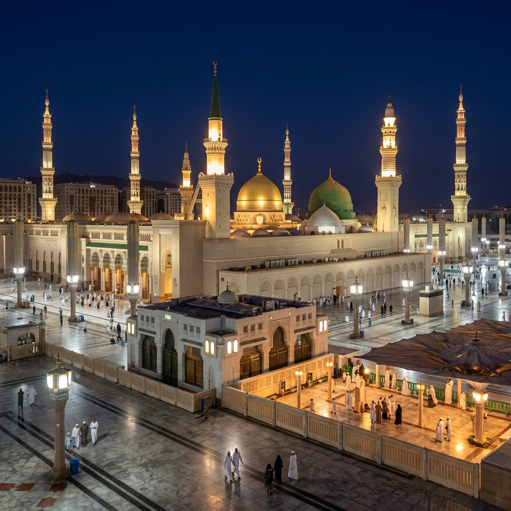
المسجد النبوي الشريف
أداء الصلوات الخمس والسلام على رسول الله ﷺ وعلى صاحبيه، والتجمع بالساحات الشريفة.
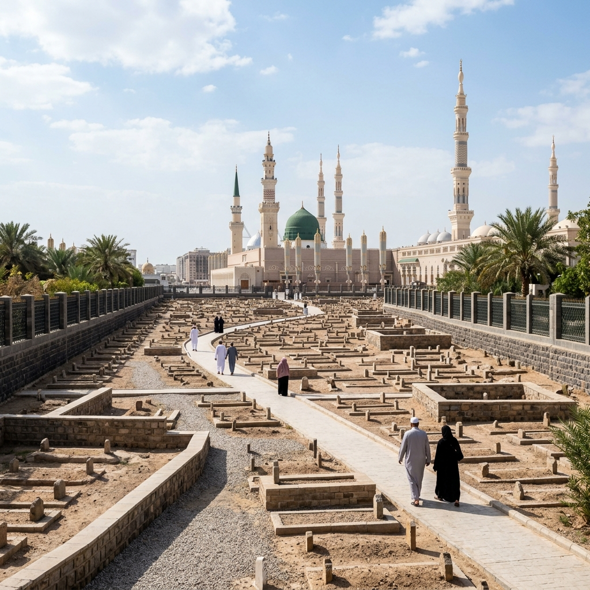
جنّة البقيع وزيارة أئمة البقيع
المقبرة التاريخية الأقدم والأعظم شرفاً بالمدينة المنورة، تقع ملاصقة للمسجد النبوي الشريف من الجهة الشرقية وتضم أجساد الآلاف من آل بيت النبوة، الصحابة، والتابعين.
تفاصيل القبور المباركة المستحب زيارتها:
-
أئمة البقيع (عليهم السلام):
- الإمام الحسن بن علي المجتبى (عليه السلام)
- الإمام علي بن الحسين السجاد (عليه السلام)
- الإمام محمد بن علي الباقر (عليه السلام)
- الإمام جعفر بن محمد الصادق (عليه السلام)
- آل بيت النبي وأقرباؤه: قبر السيدة فاطمة بنت أسد (والدة الإمام علي عليه السلام)، وإبراهيم ابن النبي ﷺ، وعمات النبي.
- زوجات النبي والصحابة: أمهات المؤمنين (زوجات النبي ﷺ) وقبور كبار الصحابة رضوان الله عليهم أجمعين كعثمان بن عفان والعباس بن عبد المطلب.
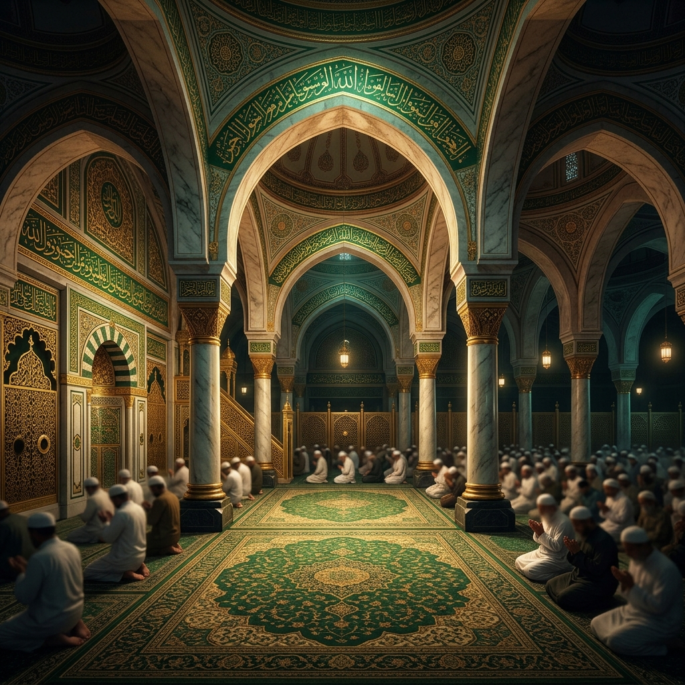
الروضة الشريفة (مع نصائح الحجز)
الصلاة في الروضة الشريفة (روضة من رياض الجنة).
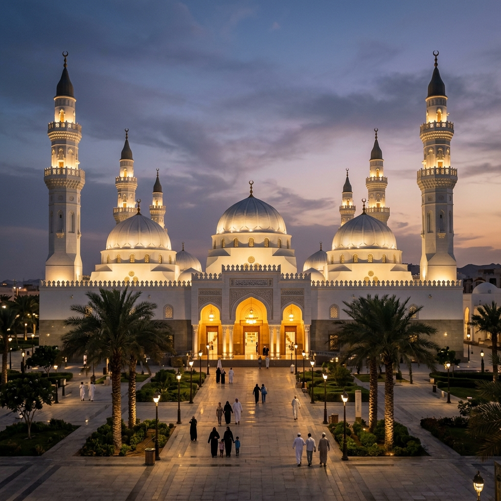
مسجد قباء وجادة قباء
أول مسجد أُسس على التقوى. صلاة ركعتين فيه تعادل أجر عمرة كاملة (يُفضل زيارته يوم السبت اقتداءً بالسنة النبوية).
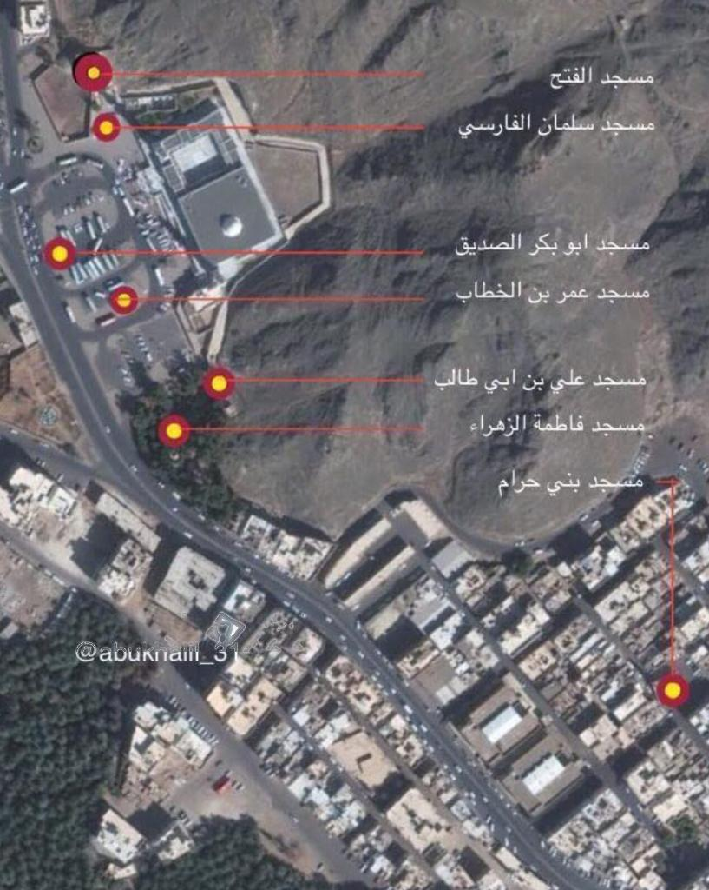
المساجد السبعة وموقع غزوة الخندق
موقع معركة الخندق التاريخي غرب جبل سلع، ويضم مجموعة مساجد تاريخية مباركة (مسجد الفتح الأعلى، مسجد سلمان الفارسي، مسجد علي بن أبي طالب، ومسجد فاطمة الزهراء عليها السلام) وهو المكان الذي دعا فيه النبي بالفتح واستجيب له.
تفاصيل المساجد السبعة التاريخية ومسمياتها:
- مسجد الفتح: أكبر المساجد مساحة ويقع على ربوة جبل سلع، وهو أعظمها لكونه مكان دعاء النبي ﷺ يوم الأحزاب.
- مسجد سلمان الفارسي: يقع جنوب مسجد الفتح على قاعدة جبل سلع.
- مسجد أبو بكر الصديق: يقع إلى الغرب من مسجد سلمان على مسافة قريبة.
- مسجد عمر بن الخطاب: يقع جنوب مسجد أبي بكر ويتخذ شكلاً مستطيلاً.
- مسجد علي بن أبي طالب: يقع على رابية مرتفعة شرقي مسجد فاطمة.
- مسجد فاطمة الزهراء: أصغر المساجد السبعة مساحة ويُعرف تاريخياً بمسجد سعد بن معاذ.
- المسجد السابع: يختلف المؤرخون في تحديده، فمنهم من يضيف إليه مسجد القبلتين أو مسجد الراية لتكتمل التسمية سبعة.

جبل أحد ومقبرة الشهداء
جبل يحبنا ونحبه. زيارة مقبرة الشهداء (سيد الشهداء حمزة بن عبد المطلب رضي الله عنه) والصعود الخفيف لجبل الرماة وتجنب أوقات الظهيرة الحارة صيفاً.
🗺️ الموقع على الخريطة (GPS): 24.5034, 39.6110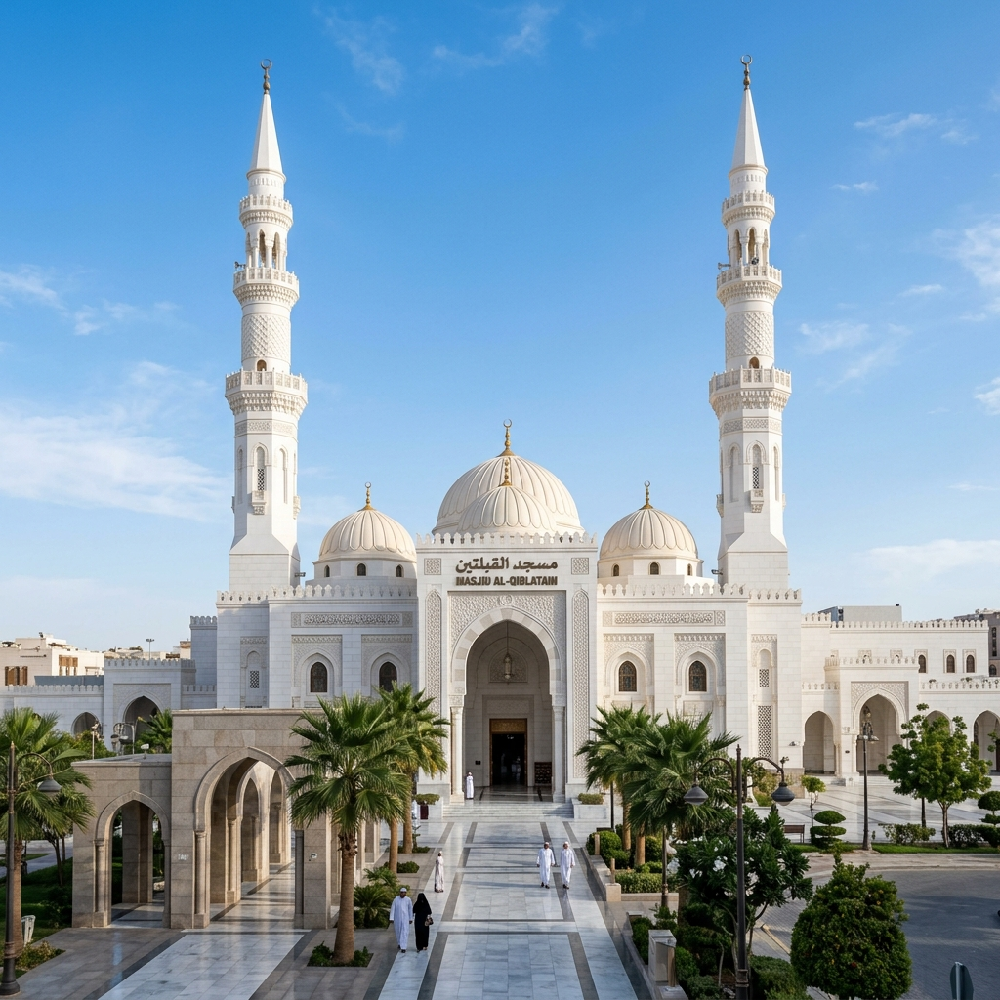
مسجد القبلتين
المسجد التاريخي العريق الذي شهد تحويل القبلة في الصلاة من بيت المقدس إلى الكعبة المشرفة بمكة المكرمة.
🗺️ الموقع على الخريطة (GPS): 24.4842, 39.5786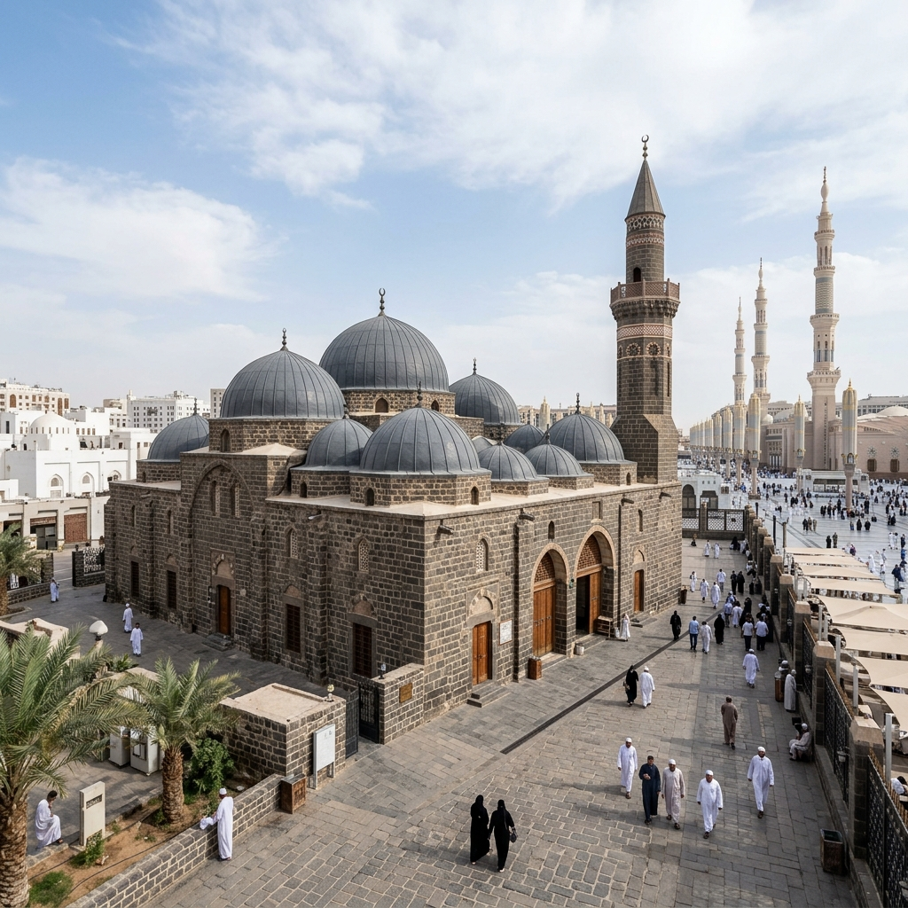
مسجد الغمامة ومساجد المصلى
تقع بالجهة الغربية الجنوبية للمسجد النبوي (منطقة المناخة)، وهي المساجد التاريخية التي صلى بها النبي ﷺ صلاة العيد وصلاة الاستسقاء ونزلت فيها الغمامة مظللة للنبي.
🗺️ الموقع على الخريطة (GPS): 24.4650, 39.6080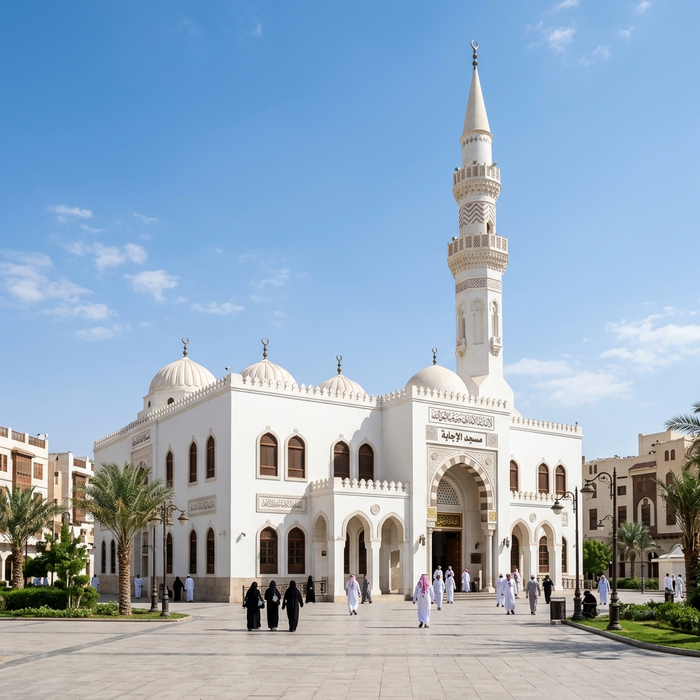
مسجد الإجابة
مسجد تاريخي قريب من البقيع دعا فيه النبي ﷺ بثلاث دعوات واستجيب له في اثنتين، وتستحب الصلاة والزيارة فيه.
🗺️ الموقع على الخريطة (GPS): 24.4735, 39.6210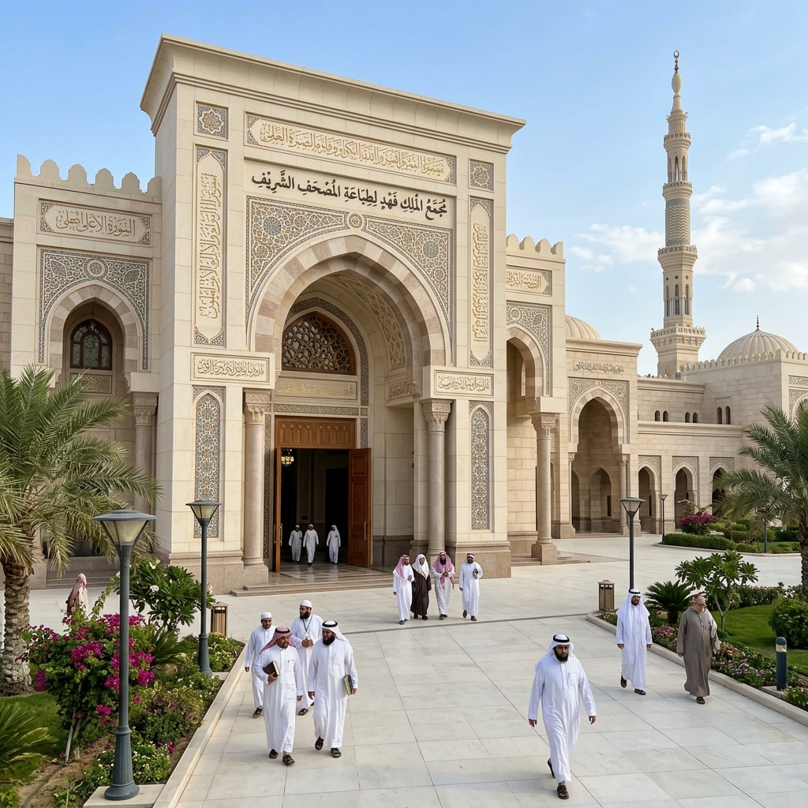
مجمع الملك فهد لطباعة المصحف الشريف
مشاهدة مراحل طباعة وتجليد القرآن الكريم وتلقي مصحف هدية معتمد مع نهاية الزيارة.
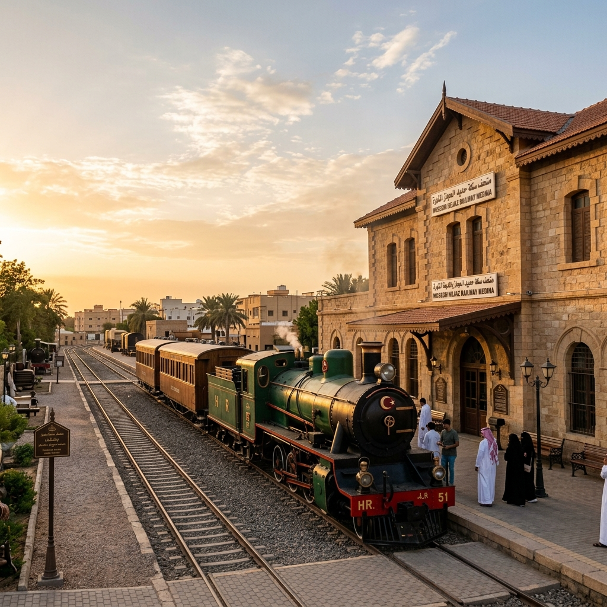
متحف سكة حديد الحجاز ومتحف دار المدينة
تجربة تاريخية وتعليمية ممتازة للطفلة لمشاهدة القطار العثماني القديم ومجسمات السيرة النبوية التفاعلية.
🗺️ الموقع على الخريطة (GPS): 24.4615, 39.6025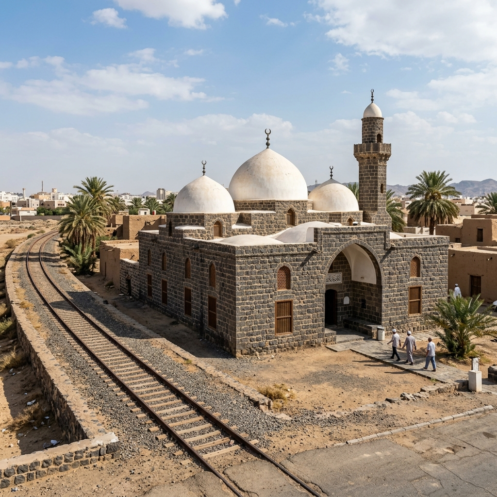
مسجد السقيا وبئر السقيا التاريخية
المسجد الباروك المبارك القريب من محطة سكة حديد الحجاز، وهو الموقع الذي استعرض فيه النبي ﷺ جيش غزوة بدر ودعا فيه لأهل المدينة بالبركة وشرب وتوضأ من بئر السقيا.
🗺️ الموقع على الخريطة (GPS): 24.4602, 39.6015
مسجد الشجرة (ميقات ذو الحليفة)
ميقات أهل المدينة المنورة والزوار للإحرام بالحج والعمرة، المسجد المعماري المتميز ذو المنارة الشاهقة والحدائق الخضراء.
🗺️ الموقع على الخريطة (GPS): 24.4128, 39.5432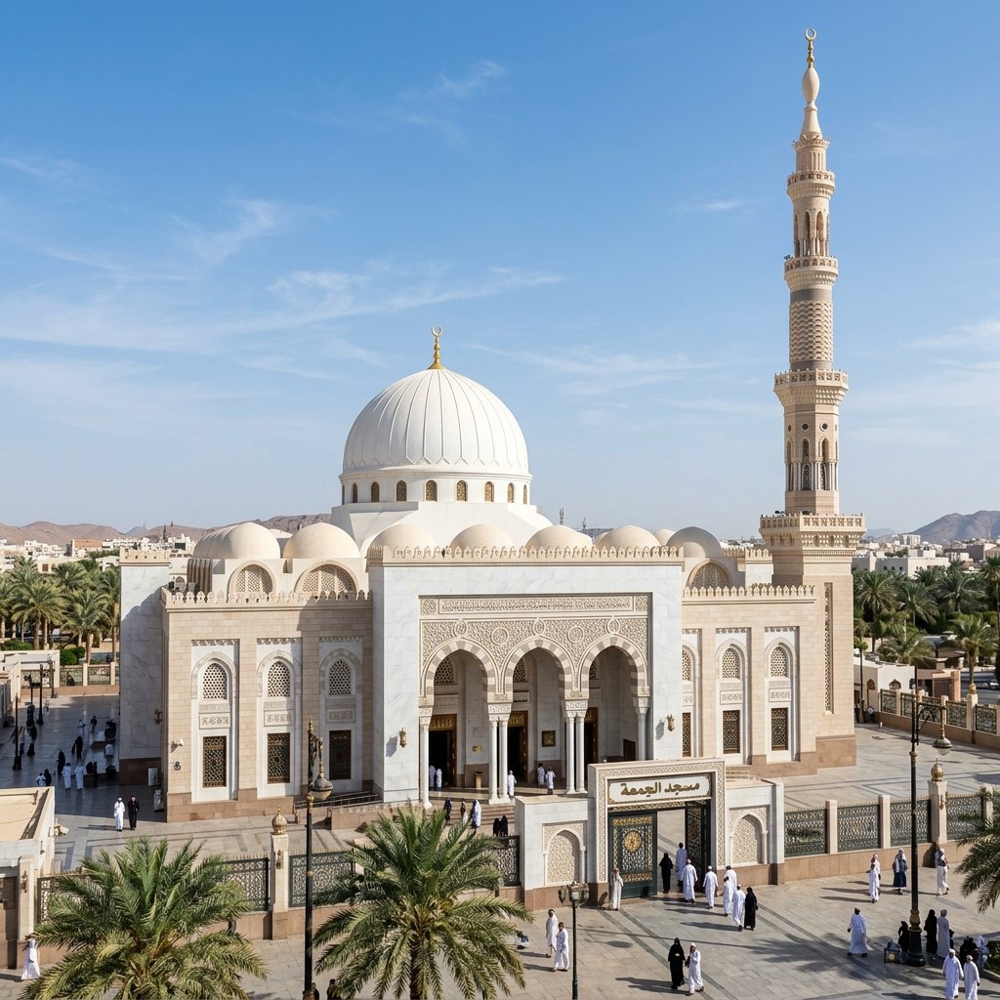
مسجد الجمعة (مسجد عاتكة / الوادي)
المسجد التاريخي الذي أدى فيه رسول الله ﷺ أول صلاة جمعة في الإسلام عند قدومه ومهاجره إلى المدينة المنورة.
🗺️ الموقع على الخريطة (GPS): 24.4448, 39.6158
مسجد الفضيخ (مسجد الشمس)
مسجد تاريخي يقع بمنطقة العوالي الشرقية بالقرب من قباء، صلى فيه النبي ﷺ وتستحب زيارته والتبرك بالصلاة فيه.
🗺️ الموقع على الخريطة (GPS): 24.4430, 39.6325
بئر غرس وبئر عثمان بن عفان
البئر التاريخية المباركة القريبة من قباء التي كان النبي ﷺ يشرب منها وتوضأ منها وأوصى أن يُغسل من مائها، وبئر رومة التاريخية.
🗺️ الموقع على الخريطة (GPS): 24.4485, 39.6260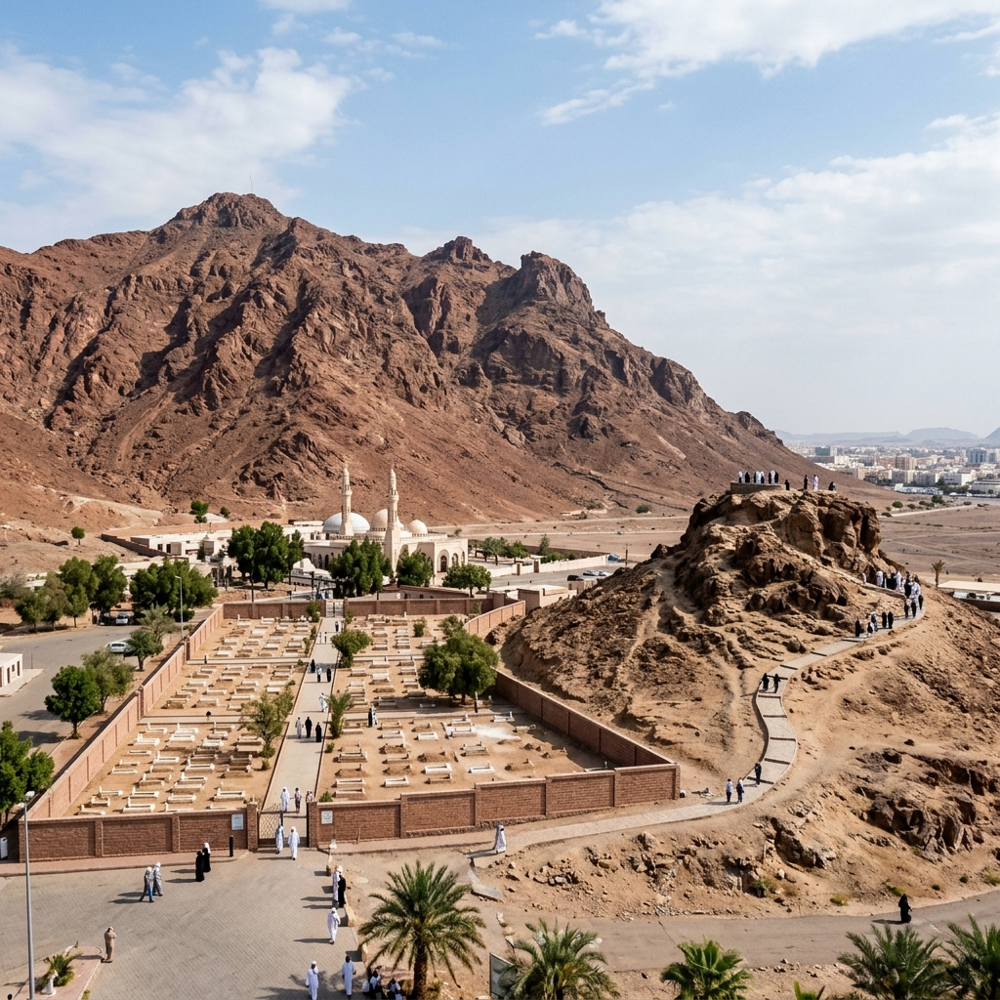
وادي العقيق المبارك وجبل عير
الوادي الذي قال فيه النبي ﷺ: (أتاني آتٍ من ربي فقال: صلِّ في هذا الوادي المبارك)، وهو ممشى ومُتنزه طبيعي خلاب للعائلة.
🗺️ الموقع على الخريطة (GPS): 24.4420, 39.5580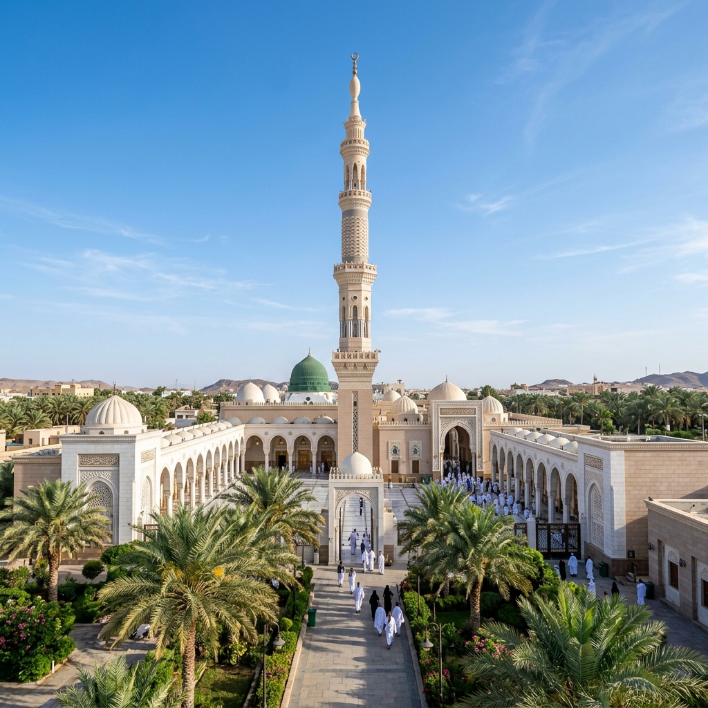
حديقة ومنتزه الملك فهد المركزي
أكبر منتزه عائلي بالمدينة المنورة يضم مساحات خضراء طليقة، قطار الحديقة، ألعاب أطفال، ومقاهٍ عائلية ممتازة للمساء.
🗺️ الموقع على الخريطة (GPS): 24.4280, 39.6240دليل الأنشطة العائلية، المطاعم، والمزارع بالمدينة المنورة
الأسواق والواجهات العائلية
1. أسواق المنطقة المركزية (قرب الحرم)
دقيقة واحدة
مشياً
شراء عطور المسك والتمور والهدايا التذكارية عبر بوابات الحرم (بوابة 339 مليئة
بالمعارض).
2. واجهة وممشى جادة قباء التراثية
1.5 كم من
الحرم
شارع تسوق عائلي مفتوح يضم محلات ومطاعم ومقاهٍ وجلسات مسائية خلابة.
3. سوق التمور المركزي بالمدينة
1 كم جنوب
الحرم
أفضل موقع لشراء عجوة المدينة والتمور الفاخرة الطازجة مباشرة.
4. واجهة مسجد القبلتين الجديدة
4.5 كم من
الحرم
ممشى وواجهة حديثة تضم مطاعم ومقاهٍ وجلسات مفتوحة للمشي والتسوق.
5. شركة توفير المدينة (مجمع بوخمسة)
تسوق
اقتصادي
معرض متكامل يوفر مستلزمات وهدايا ألعاب ملابس بأفضل الأسعار التنافسية بالمدينة.
6. مولات المدينة الكبرى (النور / الراشد / العالية)
مولات مغلقة
تضم صالات ألعاب أطفال (سباركيز)، مطاعم عالمية، وسينما، وسوق وسط المدينة التراثي.
المطاعم المحلية والتراثية الموصى بها
1. مطعم دار بسمة (حساوي 🌴)
نوصي به
للعائلة
يقدم طعام حساوي تراثي مميز (خبز أحمر، كبسة حساوية) يربطكم بذكريات الأحساء والمنطقة
الشرقية.
2. مطعم شهزاد (إيراني 🍲 - الأجدد)
راقٍ وجديد
أفخم المطاعم الإيرانية الجديدة بالمدينة يقدم المشويات والرز الزعفراني والكبائن
المغلقة.
3. مطعم بهارات (هندي 🌶️)
مذاق هندي
أصيل
خيار ممتاز لعشاق البرياني والماسالا الحارة مع جلسات عائلية مريحة.
4. مطعم المزار الدمشقي وتل الهوى
مشويات
شامية
تشكيلة واسعة من كباب اللحم والشاورما والمقبلات الشامية اللذيذة.
5. مطعم زمان جدي والرصافة
شعبي
وتراثي
مأكولات شعبية وتراثية وجلسات واسعة تناسب التجمعات العائلية المريحة.
6. مطعم البيك (فرع الساحات وقباء)
دقيقتين من
الحرم
الوجبة المفضلة والسهلة للأطفال (مسحب دجاج وبروستد).
7. مطعم الرومانسية وطباخ الريف
كبسة ومندي
الخيار الأفضل للرز البخاري، الكابلي، المندي مع كبائن عائلية مغلقة وساترة.
بساتين ومزارع المدينة التراثية
1. بستان ومزرعة المربد التراثية
دخول مجاني
(نهاري ☀️)
أجواء ريفية ساحرة، ممشى بين النخيل الباسق، ومقاهٍ شعبية هادئة وجلسات مريحة.
2. ريف البستان وجلساته الخضراء
دخول مجاني
(نهاري ☀️)
مزرعة تاريخية منسقة للعوائل يفضل زيارتها نهاراً للتمتع بجمال الطبيعة.
3. مزرعة سلمان الفارسي وبئر الفقير
موقع أثري
مجاني
موقع بئر الفقير الأثري وجواره المزرعة التاريخية التي كاتب فيها سلمان الفارسي وغرس بها
النبي النخل.
4. متحف وبستان الصافية التفاعلي
دخول
مجاني
مشروع حديث بجوار ساحات الحرم يضم مجسمات وشاشات تفاعلية وحديقة نخيل ممتازة.
5. بستان الإمام الكاظم (مزرعة صريا)
دخول
مجاني
بستان هادئ ذو إطلالة ممتازة وجلسات عائلية ريفية تقليدية.
6. واحة ميلاف وسوشل فارم وبستان المستظل
دخول
مجاني
مزارع مجهزة كمتنزهات ريفية ومقاهي وجلسات شواء بالهواء الطلق.
ألعاب أطفال ومناطق ترفيه مميزة
1. حديقة زهور المقر وسياكل الجبل 🚲
بجوار جبل
أحد
موقع رائع يضم حديقة الزهور وتأجير دراجات هوائية وسيارات أطفال وكبار (يفضل جلب فرشة وجلسة
للجلوس).
2. ملاهي الطفل المغامر للألعاب
ترفيه
حركي
ملاهٍ مخصصة للأطفال توفر أنشطة وفعاليات حركية ومسابقات شيقة وممتعة للطفلة.
3. متجر يمي الكوري (Yummy Korean Store 🇰🇷)
للفتيات
والأطفال
محل مميز لبيع المنتجات والأغذية والألعاب الكورية الخفيفة التي تحبها الفتيات في سن الـ 10
سنوات.
4. متحف السيرة النبوية الشريفة
تذاكر (40
ريال)
تقنيات عرض سينمائية حديثة ومجسمات تفاعلية تقرب السيرة النبوية لأذهان الأطفال.
5. محمية الأوسية للطيور
تجربة
طبيعية
محمية طبيعية ممتازة لمشاهدة وتغذية الطيور النادرة والتقاط الصور التذكارية معها
للطفلة.
6. منتزه درة المدينة وألعاب كاينتك وهوى
ألعاب
داخلية
صالات ألعاب مغلقة وألعاب كاينتيك حركية وترامبولين ممتعة للأطفال.
الجدول الزمني المقترح والحيوي للرحلة البرية
اختر وقت بداية انطلاقك وتنسيق مدة الاستراحة في كل محطة، ليعيد النظام حساب الجدول الزمني ومواعيد الوصول تلقائياً.
| الوقت المتوقع | المسافة | زمن القيادة | مكان التوقف / المحطة | وقت الاستراحة (تعديل حي) | ملاحظات وتوصيات مهمة |
|---|
قائمة التجهيزات والنصائح العملية وأرقام الاتصال المباشر
دليل تفاعلي تفصيلي لتجهيزات السفر، تصفية الفئات السريعة، تكتيكات القيادة الآمنة صيفاً، وشبكة أرقام المساعدة المباشرة.
النصائح والتكتيكات العملية للقيادة الآمنة على الطرق السريعة صيفاً
تكتيك حرارة الصيف والإطارات
افحص ضغط الإطارات صبيحة السفر وهي باردة (32-35 PSI). احذر تعبئة وقود السيارة لأقصى حد في الظهيرة لمنع تمدد البنزين بالحرارة.
قاعدة الاستراحة الذهبية (2/20)
توقف كل ساعتين قيادة صافية لمدة 20 دقيقة بالمحطة لترطيب الجسم وتبريد إطارات المركبة واستعادة قمة التركيز الذهني.
بروتوكول العواصف والرياح الترابية
في حال هبوب الغبار: خفّض السرعة فوراً إلى 80 كم/س، شغّل الأنوار الواطئة، واحذر استخدام إشارات الفلاش الرباعي (Hazard) أثناء الحركة.
إدارة الوقود الاستباقية
لا تدع الوقود يقل عن المنتصف (1/2) أبداً، خاصة في قطاع القصيم-المدينة السريع (بين عقلة الصقور والحناكية distance 190 كم).